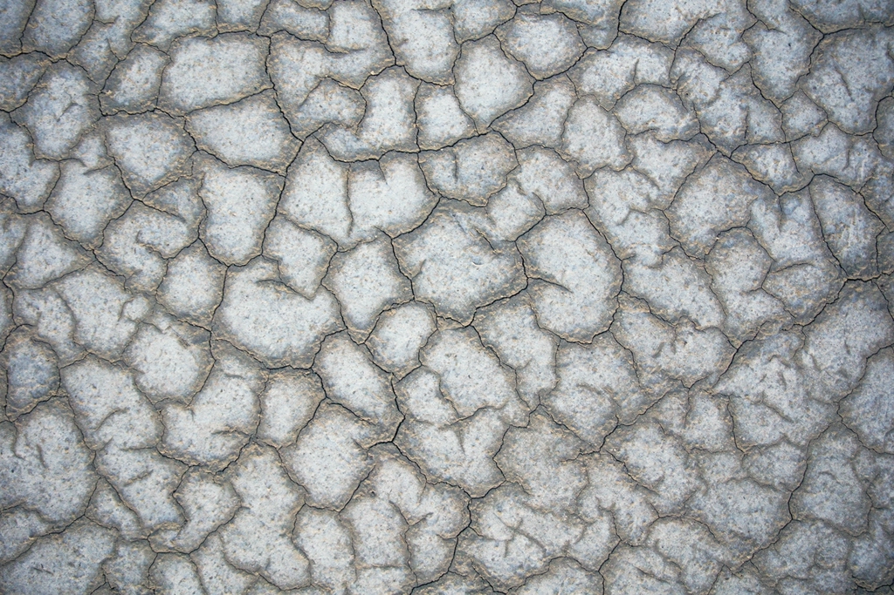

Foundation Wall Cracks: Which Ones Are Serious?
Most foundation wall cracks are not structural, and the way to tell is width, pattern, and movement rather than how alarming the crack looks. A crack narrower than 1/8 inch that has not changed is usually shrinkage from curing concrete. A crack wider than 1/4 inch, a horizontal crack at any width, or a crack that keeps growing means the soil is moving the wall, and that is the group that needs a professional evaluation.
Foundation walls crack because the ground under and around them moves unevenly. One corner settles a fraction more than another, clay soil swells against the wall after wet weeks, or frost lifts a shallow footing and sets it back down in a slightly new spot. The wall, which cannot flex, records that movement as a crack. Reading the crack means reading which kind of movement made it.
This page walks through the threshold table contractors and engineers actually use, the four crack patterns and their usual causes, a monitoring method that costs almost nothing, and what each fix runs. FoundationMatch is a matching service, not a contractor: we publish the ranges and the reasoning so you can compare any quote you receive against them.
Wall material shapes what you see. In a poured concrete wall a crack runs as a single line and may pass through the full thickness. In a block or brick wall the same force usually steps along the mortar joints instead, because the joints are the weakest path. Neither presentation is automatically worse; width, pattern, and growth matter more than the material the crack happens to cross.
Request a free inspection
Start with width, pattern, and movement
Width is the easiest measurement and the one homeowners most often skip. Hold the edge of a credit card or a coin against the crack and compare, or use an inexpensive crack width gauge. Record the widest point, not the average, because a crack that tapers from wide to hairline is telling you the wall rotated, and the wide end is where the movement is concentrated.
Pattern is the second filter. Vertical cracks mostly follow shrinkage or mild settlement. Horizontal cracks are different in kind: they run along a mortar joint or across a poured wall at mid-height, where soil pushing inward bends the wall. Stair-step cracks follow the joints in brick and block and usually mark one corner or section dropping faster than the rest.
Movement is the third filter and the one that separates a scar from an active problem. A crack can be wide and finished, or hairline and still growing. Marking and dating the crack, covered in the self-check section below, is how you find out which one you have before paying anyone to guess.
One more measurement deserves attention: offset. Run a fingertip across the crack. If one side sits noticeably higher or further out than the other, the two pieces of wall are no longer in the same plane, which means the wall has not just split, it has shifted. Offset cracks belong in the professional group at almost any width, because a seal cannot hold a wall that is still travelling.
| Crack pattern and width | Likely cause | What to do | Urgency |
|---|---|---|---|
| Hairline, under 1/16 inch, any direction | Concrete curing shrinkage | Monitor; seal for water only if it leaks | Routine |
| Vertical, 1/16 to 1/8 inch, straight and dry | Minor settlement or shrinkage | Seal if you like, and monitor | Low |
| Vertical or diagonal, 1/8 to 1/4 inch | Early settlement or soil moisture change | Monitor monthly; evaluate if growing | Moderate |
| Stair-step through mortar joints in brick or block | Differential settlement, often at a corner | Professional evaluation | Moderate to high |
| Horizontal, any width, especially at mid-wall height | Lateral soil pressure from clay, frost, or saturated soil | Professional evaluation soon | High |
| Over 1/4 inch, offset so one side sits higher, leaking, or visibly growing | Active settlement or wall movement in progress | Professional evaluation promptly | High |
When should I worry about a crack in my foundation?
Worry when a crack is wider than 1/4 inch, runs horizontally, has one side sitting higher than the other, leaks water, or is measurably growing between seasons. Any one of those five signs moves a crack out of the cosmetic category. Hairline cracks under 1/8 inch that stay dry and unchanged are usually safe to monitor instead.
Can I ignore hairline cracks in my foundation?
You can monitor them rather than repair them, which is different from ignoring them. Hairline cracks under 1/16 inch are a normal result of concrete curing and minor shrinkage. Mark the ends with a dated pencil line, photograph them, and check each season. If the line is crossed or the crack widens past 1/8 inch, get it evaluated.
The four crack patterns, and what each usually means
Vertical cracks are the most common pattern and the least alarming as a group. Poured concrete shrinks as it cures, and the crack often appears within the first few years, running straight down from a window corner or a step in the footing. These cracks mainly matter as water paths in basement walls, and a flexible injection seal usually ends the story.
Horizontal cracks deserve faster attention. Saturated soil, expansive clay, and frost all push sideways, and a basement wall is weakest at mid-height, which is exactly where the crack opens. A horizontal crack is often paired with a slight inward bow. Left alone, the same pressure that opened the crack keeps working, and repair options get more expensive as the wall moves.
Stair-step cracks climb through brick and block in a zigzag because the mortar joints are weaker than the units. They point to differential settlement, most often a corner dropping. Diagonal cracks in poured walls, and in the drywall above door frames, carry a similar message: one part of the structure moved and another did not, and the material between them tore along the diagonal.
Cracks also gather at predictable weak points: the corners of basement windows, the top of a wall where the footing steps down a slope, and the joint where an addition meets the original house. An addition crack that opens a little more each year usually means the two foundations are moving on different schedules, which is common and fixable, but it is rarely finished moving after a single season.
Are horizontal foundation cracks more serious than vertical ones?
Usually, yes. A vertical crack most often reflects shrinkage or mild, fairly even settlement, while a horizontal crack means soil is pushing the wall inward hard enough to bend it. Horizontal cracks pair with bowing walls and can worsen each wet or frozen season. Get a horizontal crack evaluated promptly rather than sealing it and watching.
What causes stair-step cracks in a foundation?
Stair-step cracks usually come from differential settlement: one section of footing, often a corner, sinks faster than the rest, and the wall above it tears along the mortar joints in a zigzag. Clay soil that dries and shrinks under a corner is a frequent trigger. A stair-step crack wider than 1/4 inch or still lengthening needs a professional evaluation.
What is actually moving the ground
Settlement is the slow sinking of soil under a footing, and differential settlement, where one part sinks more than another, does most of the damage. Fill soil that was not compacted during construction, soil washed out by a plumbing leak or poor drainage, and drought drying all lower support unevenly. The house does not need to move much: a fraction of an inch across a wall is enough to crack masonry.
The mechanism changes by region. In Shreveport and Abilene, expansive clay swells when wet and shrinks hard in drought, working footings up and down with the seasons. Around Lexington, limestone dissolves into karst voids that can drop a footing suddenly rather than slowly. New Orleans adds broad land subsidence, where the ground itself is sinking. In Iowa and Wisconsin, frost heave lifts shallow footings in winter and drops them unevenly at thaw.
Trees and water management are the two causes homeowners control. A large tree close to the house pulls moisture from clay soil and can shrink it on one side only. Downspouts that dump roof water beside the footing saturate one stretch of soil, softening it or feeding the clay swell. Both show up as cracks that track seasons and weather rather than marching steadily in one direction.
Water pressure deserves its own mention because it is the cause most under the homeowner's control. Soil that stays saturated weighs far more than dry soil and pushes proportionally harder on basement walls, especially where grading slopes toward the house or downspouts discharge at the footing. Many horizontal cracks and mid-wall bows trace back to years of unmanaged roof water rather than to any defect in the wall itself.
Age by itself cracks very little. A wall that survived fifty winters has already proven it can live with its soil; what changes the equation is a new condition, such as a wetter climate pattern for the street, a mature tree's roots reaching the footing line, fill slowly consolidating under an addition, or a footing that was always a little shallow meeting a harder freeze than the ones before it. That is why evaluators ask what changed in the last few years, and why your answer to that question, plus your dated marks, usually identifies the cause before any digging starts.
How do you find out what's causing the cracking?
Work from pattern, timing, and place. Map where the crack is, measure its width, and note when it changes: cracks that open in drought and close after rain point to clay, cracks at one corner point to local settlement, and mid-wall horizontal cracks point to soil pressure. A structural engineer can confirm the cause independently before you price repairs.
Why would cracks appear after years of living in a house with no problems?
Because the trigger is usually a change, not the original construction. A new drought cycle, a tree reaching full size, a slow plumbing leak, a neighbour's excavation, or drainage that gradually failed can start movement in a house that sat quiet for decades. The crack is new information about current soil conditions, which is why it deserves a fresh look.
Check it yourself: measure and monitor for one season
Monitoring separates the two groups for the price of a pencil. Draw a short line across the crack at its widest point and at each end, and write the date beside each mark. If the crack grows past a mark, you have a date and a measurement instead of a feeling. Repeat a photo from the same spot with a coin in frame for scale.
A crack monitor gauge, a small plastic plate that fixes over the crack and reads movement on a scale, costs little and removes all doubt. Check monthly, and also after the two events that move soil most: a long dry spell and a heavy rain week. One season of records tells an evaluator more than any single visit can.
When you do call an evaluator, hand over the record instead of a summary. Dated photographs, width readings, and the dates of droughts or heavy rain let a competent inspector separate an old, finished crack from an active one in a single visit. If a visitor glances at the crack for ten seconds and produces a large quote, that contrast tells you something about the quote.
- Mark both ends and the widest point of the crack with dated pencil lines
- Photograph the crack with a coin or ruler in frame, from the same distance each time
- Fit a crack monitor gauge if the crack is wider than 1/8 inch
- Recheck monthly, plus after droughts and after heavy rain
- Note anything else that changes: sticking doors, floor slope, new cracks elsewhere
How do I know if a foundation crack is serious?
A foundation crack is serious when it is wider than 1/4 inch, horizontal, offset so one side sits higher, leaking, or still growing on your dated marks. Serious also includes any crack that arrives with new companions: sticking doors, sloping floors, or a wall that visibly leans. One of those signs is enough to book a professional evaluation.
A thin crack showed up in my one-year-old house. Should I be worried?
Probably not, especially if the crack is in an upstairs partition wall rather than the foundation itself. New homes dry out, framing lumber shrinks, and roof trusses can lift slightly in winter, all of which open hairline drywall cracks that have nothing to do with the footing. Photograph and date it; worry only if it widens or doors start sticking.
What it costs to fix a foundation wall crack
For a stable crack that only leaks or offends the eye, injection is the standard fix: a technician seals the crack and injects epoxy for strength or flexible polyurethane to stop water, and published prices run $500 to $2,500 per crack depending on length and access. That price buys a seal, not a cure, which is why the movement question has to be answered first. Sealing an active crack just moves the tear somewhere else.
When monitoring shows movement, the repair is under the house, not on the wall. Piers driven or screwed to stable soil run $1,000 to $2,500 each installed in published ranges, and a typical structural repair lands between $4,000 and $12,000 depending on pier count. A quote in that range should list pier locations and counts; a quote that skips the monitoring evidence and jumps straight to a large number deserves a second, independent opinion before you sign.
That pattern shows up in homeowner forums constantly: a five-figure estimate handed over for a few wall cracks, with no sticking doors, no floor slope, and no measurements attached. Sometimes the big quote is right. Often it is a sales number. The cheap protection is an itemised quote and, where the diagnosis itself is disputed, a structural engineer's report that you pay for yourself, so the advice is not tied to selling the repair.
Some wall cracks are answered from the wall side rather than from under the footing. A bowed wall with a horizontal crack may be stabilised with wall anchors or carbon-fiber reinforcement once an evaluator confirms the footing is sound, and those projects are priced per wall rather than per pier. The sequencing rule still holds: confirm the footing is not moving first, or the wall work inherits the same motion that cracked it.
Is it better to repair or rebuild a foundation with a major crack?
Repair, in almost every case. Modern piers, wall anchors, and injection systems fix even seriously cracked foundations in place, and full foundation replacement is rare, disruptive, and far more expensive than underpinning. Rebuilding enters the conversation only when a wall has collapsed or lost so much section that it can no longer carry load, which a structural engineer would confirm.
Frequently asked questions
Do foundation cracks always mean structural damage?
No. Most foundation cracks are non-structural shrinkage cracks from curing concrete, and they never affect the strength of the wall. Structural cracks are the minority: wide, horizontal, offset, growing, or paired with sticking doors and uneven floors. The patterns and thresholds on this page separate the two groups, and monitoring settles any case you are unsure about.
How quickly do I need to repair foundation cracks?
Hairline and stable cracks can wait for a convenient season; injection is not urgent if the crack is dry and unchanged. Move faster on horizontal cracks, cracks over 1/4 inch, any crack that leaks after rain, and any crack still growing on your marks. Those are active problems, and active soil movement makes every repair bigger the longer it runs.
Why does my house make cracking sounds at night?
Most night-time cracking sounds are thermal, not structural. Framing, ductwork, and finishes expand in daytime heat and contract as the house cools, and the ticks and pops follow temperature changes, often right after the heating system cycles. Sounds alone, with no new cracks, sticking doors, or floor slope, rarely signal foundation trouble; watch for visible changes instead.
Can a crack that is not structural still let water into my basement?
Yes. A shrinkage crack can run the full depth of a poured wall, and groundwater only needs that one path. The fix is still injection, but the material differs: flexible polyurethane foam expands to seal an active leak, while rigid epoxy is chosen when bonding strength matters. A dry, stable crack above the water table may never leak at all.
Should I seal a crack myself before having it inspected?
Seal nothing until the crack has been measured and photographed, because fresh filler hides the width and the pattern an evaluator needs to read. Surface patching also fails quickly on an active crack and can push water sideways into new paths. If water is actively entering, a temporary hydraulic cement plug is fine; keep your dated photos for the inspection.
Does homeowners insurance cover foundation crack repair?
Usually not when the cause is settlement, soil movement, or age, which standard policies exclude as gradual damage. Coverage sometimes applies when a covered sudden event caused the crack, such as a burst pipe that washed out soil under a footing. Read your policy's earth-movement exclusion, and document any sudden event with photos before you clean up.
Related guides
Request a free foundation inspection
Tell us where you are and what you are seeing — a local specialist will call you back to schedule it.
Prefer to talk first? [Call-tracking phone number to be added before launch]